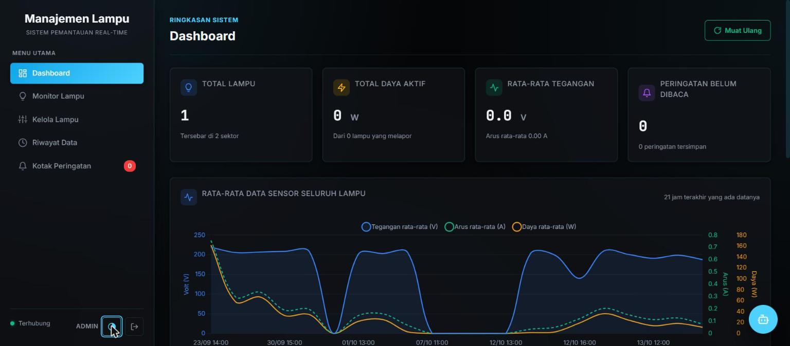
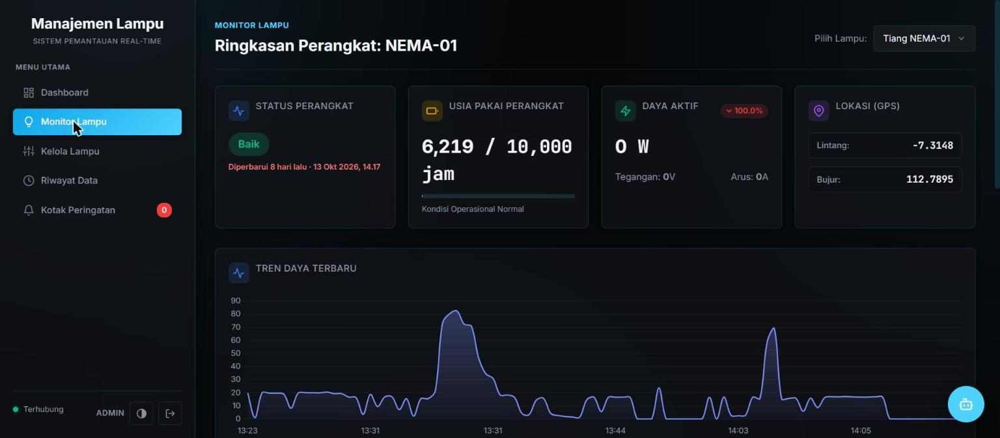
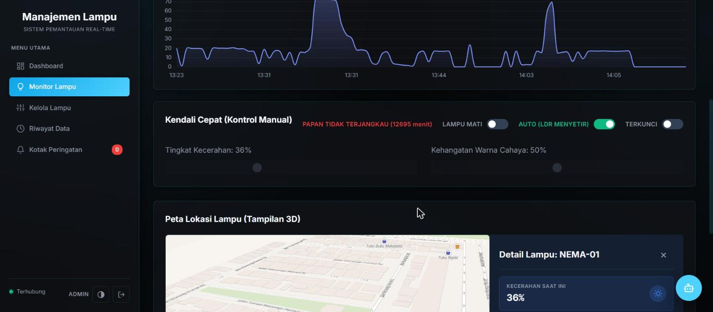
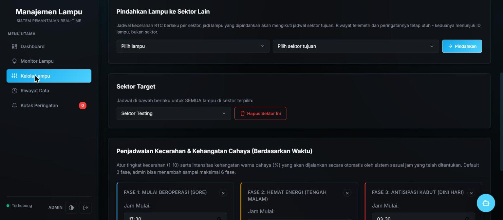
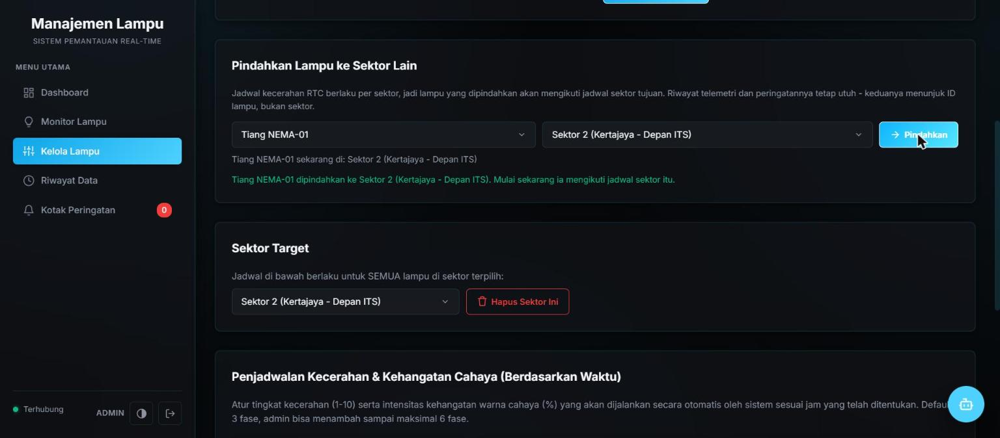
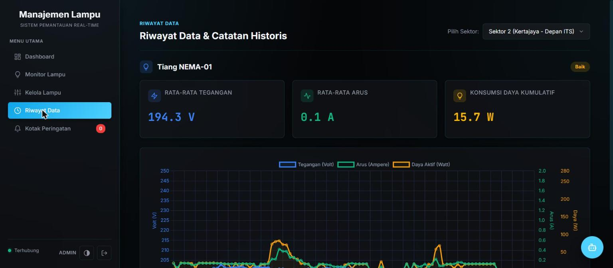
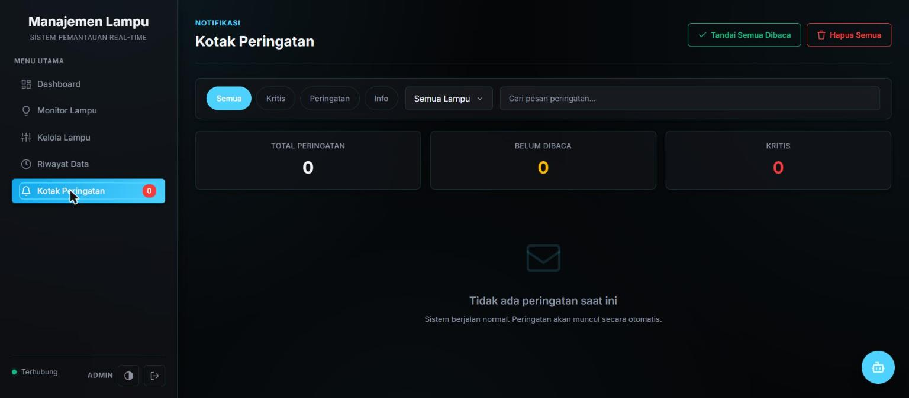

| Perangkat | NEMA-01 · APM32F103CBT6 |
| Modem seluler | Quectel EG800K (LTE Cat 1) |
| Broker MQTT | broker.hivemq.com |
| Periode pengembangan | 12 – 22 Oktober 2026 |
| Tanggal laporan | 22 Oktober 2026 |
Laporan ini mendokumentasikan pengembangan pengendali lampu jalan NEMA berbasis mikrokontroler APM32F103CBT6 beserta jalur datanya menuju dashboard pemantauan berbasis web. Pembahasan menitikberatkan dua hal: cara kerja perangkat NEMA itu sendiri, dan bagaimana data bergerak dua arah antara perangkat dan dashboard melalui jaringan seluler.
Sistem terdiri atas tiga bagian yang berjalan terpisah dan tidak pernah saling menghubungi secara langsung: papan NEMA di lapangan, broker MQTT publik sebagai perantara, dan proses backend FastAPI yang menulis ke PostgreSQL serta menyiarkan pembaruan ke browser melalui WebSocket. Pemisahan ini penting untuk dipahami sejak awal, sebab sebagian besar kegagalan yang ditemukan selama pengembangan berasal dari salah satu dari tiga sambungan tersebut, bukan dari perangkatnya.
Selama periode pengembangan, enam belas berkas sumber diubah pada tiga lapisan (firmware, backend, antarmuka), dua perkakas diagnostik baru dibuat, dan dua kolom basis data ditambahkan. Seluruh perubahan diverifikasi dengan pengukuran langsung, bukan dengan asumsi; angka hasil pengukuran disajikan pada Bab 9.
Papan NEMA tidak menyambung ke backend. Keduanya menyambung ke broker MQTT, dan broker yang meneruskan pesan di antara mereka. Konsekuensinya, terdapat dua arah aliran yang dapat gagal secara mandiri.
Payload telemetri berbentuk JSON tunggal yang dirakit di dalam firmware dengan snprintf ke buffer statis. Bentuk persisnya:
{"id":"NEMA-01","volt":207.219,"current":0.313,"power":61.731,
"dim":46,"relay":"on","auto":false,
"lat":-7.314997,"lng":112.789502,"uptime":2072}
Nilai pecahan dirakit dengan pembagian bilangan bulat, bukan dengan %f. Pustaka newlib-nano yang dipakai pada proyek ini tidak menyertakan dukungan pencetakan bilangan pecahan; memakai %f akan menghasilkan keluaran kosong tanpa pesan kesalahan apa pun. Karena itu tegangan 207,219 V dikirim sebagai pasangan volt_mv/1000 dan volt_mv%1000.
Pengendali dibangun di atas APM32F103CBT6, mikrokontroler Cortex-M3 buatan Geehy yang pin dan periferalnya kompatibel dengan STM32F103CB. Kapasitas memorinya 128 KB flash dan 20 KB RAM.
| Periferal | Pin / Antarmuka | Fungsi |
|---|---|---|
| USART3 | PB10 / PB11 | Konsol debug dan antarmuka perintah manual |
| USART2 | PA2 / PA3 | Modem Quectel EG800K, perintah AT |
| USART1 | PA9 / PA10 | Meter daya HLW8032, 4800 8N1 |
| EXTI15_10 | PB12 | Deteksi tepi sinyal faktor daya HLW8032 |
| ADC | PA0 | Sensor cahaya LDR |
| PWM | TIM3 | Pengaturan kecerahan lampu (0–1000 per mil) |
| GPIO keluaran | PB9 | Relai pemutus jala listrik lampu |
HLW8032 mengirimkan frame 24 bita secara terus-menerus pada 4800 baud. Tegangan dihitung sebagai V = Vpar/Vreg × Kv dengan Kv berasal dari pembagi tegangan pada papan. Faktor daya dihitung sebagai PF = P/(V·I); bentuk ini sengaja dipilih karena tidak memerlukan kalibrasi apa pun, seluruh faktor skala saling meniadakan.
Pengaturan tetap disimpan pada satu halaman flash di alamat 0x0801FC00, ditandai dengan CFG_MAGIC bernilai 'NEMA' dan CFG_VERSION 4. Versi 4 menambahkan site_lat, site_lon, dan site_set sehingga koordinat hasil penguncian GPS tetap bertahan setelah daya dimatikan.
Ketika mode otomatis aktif, kecerahan lampu ditentukan oleh pembacaan LDR. Dua peredam dipasang di antara sensor dan lampu.
Pertama, rata-rata bergerak yang menyerap gangguan sesaat seperti lampu kendaraan yang lewat atau bayangan sekilas:
ldr_avg = (ldr_avg * 3 + raw) / 4; target = ldr_to_level(ldr_avg);
Kedua, pembatas laju perubahan sebesar AUTO_STEP = 20 per mil per detik, setara 2 % per detik. Pembatas ini wajib ada karena lampu menyinari sel LDR yang mengendalikannya; koreksi seketika akan menimbulkan osilasi. Dengan pembatas tersebut, satu sapuan penuh dari 0 % ke 100 % memerlukan sekitar lima puluh detik, jauh lebih lambat daripada peralihan senja yang sesungguhnya.
Perintah kecerahan manual dari dashboard ditolak selama mode otomatis aktif. Penolakan ini disengaja: bila keduanya boleh menulis ke variabel yang sama, kecerahan akan berkedip antara nilai yang diminta operator dan nilai yang diminta LDR.
Seluruh komunikasi dengan modem dijalankan oleh mesin keadaan tak memblokir dengan tujuh belas keadaan, dari MQ_BOOT hingga MQ_WAIT. Rancangan ini dipilih agar lampu, LDR, dan meter daya tetap terlayani selama modem menunggu jawaban jaringan yang dapat memakan puluhan detik.
| Keadaan | Perintah AT | Tujuan |
|---|---|---|
| MQ_PING | AT | Memastikan modem menjawab |
| MQ_NET | AT+CEREG? | Menunggu terdaftar di jaringan |
| MQ_RADIO | AT+CFUN=1 | Menyalakan ulang radio bila berhenti mencari |
| MQ_APN | AT+QICSGP | Menyetel titik akses |
| MQ_PDP / MQ_PDPCHK | AT+QIACT, AT+QIACT? | Mengaktifkan dan memverifikasi konteks data |
| MQ_SSL | AT+QMTCFG, AT+QSSLCFG | Menyetel TLS dan sesi |
| MQ_CLOSE / MQ_SETTLE | AT+QMTCLOSE | Melepas sesi lama, memberi jeda 3 detik |
| MQ_OPEN | AT+QMTOPEN | Membuka soket ke broker, port 8883 |
| MQ_CONN | AT+QMTCONN | Mendaftar sebagai klien MQTT |
| MQ_SUB | AT+QMTSUB | Berlangganan topik perintah |
| MQ_IDLE | — | Menunggu giliran menerbitkan telemetri |
| MQ_PROMPT / MQ_ACK | AT+QMTPUB | Mengirim payload setelah tanda >, menunggu pengakuan |
Dua pelajaran penting diperoleh saat membangun mesin keadaan ini. Pertama, perpindahan keadaan harus dipicu oleh penanda akhir perintah (OK atau ERROR), bukan oleh baris data seperti +CEREG: 0,1. Pada rancangan awal, perpindahan dilakukan begitu baris data terlihat, sehingga OK penutupnya datang belakangan dan dibaca sebagai jawaban perintah berikutnya; seluruh rantai bergeser satu langkah. Kedua, ring buffer penerima harus cukup besar. Ukuran awal 64 bita memotong baris AT sepanjang 67 karakter secara diam-diam dan ditingkatkan menjadi 256 bita.
Satu proses FastAPI menangani REST API, WebSocket, penyerapan MQTT, dan penulisan ke PostgreSQL. Setiap telemetri yang masuk melewati rangkaian pemeriksaan berikut, dengan urutan yang disengaja:
device_id terhadap pola [A-Za-z0-9._-]{1,64}. Pemeriksaan ini mendahului segalanya karena pesan peringatan memuat device_id dan disimpan permanen lalu dirender ulang di dashboard.device_exists(). Perangkat yang belum terdaftar ditolak seluruhnya dan dicatat sebagai peringatan, bukan dibuang diam-diam.accrue_lamp_hours().save_reported_state().telemetry_logs.Indikator usia pakai tidak boleh berasal dari perangkat. Pada rancangan awal, angka ini diambil langsung dari medan uptime di payload telemetri, dan setiap kali pengirimnya dinyalakan ulang angkanya kembali ke nol. Sebagai dasar keputusan penggantian lampu, angka yang dapat tereset sama saja dengan tidak ada.
Backend kini menjumlahkan sendiri selisih waktu antar telemetri dan menyimpannya di kolom devices.lamp_hours:
UPDATE devices
SET lamp_hours = lamp_hours + CASE
WHEN %s AND lamp_seen IS NOT NULL
THEN LEAST(EXTRACT(EPOCH FROM (NOW() - lamp_seen)), %s) / 3600.0
ELSE 0
END,
lamp_seen = NOW()
WHERE device_id = %s
RETURNING lamp_hours;
Hanya waktu saat lampu menyala yang dihitung; lampu padam tidak menua. Celah panjang akibat backend mati atau jaringan putus dibatasi 900 detik lalu tetap dihitung sebanyak batas itu. Dua kesalahan ini tidak setara: menghitung lebih berarti lampu diganti lebih awal, menghitung kurang berarti jalan gelap lebih dahulu.
Dua kolom ditambahkan pada tabel devices selama periode ini:
ALTER TABLE devices ADD COLUMN IF NOT EXISTS relay_on BOOLEAN; ALTER TABLE devices ADD COLUMN IF NOT EXISTS auto_mode BOOLEAN;
Sebelumnya, medan relay dan auto pada telemetri hanya dipakai sesaat untuk menilai apakah lampu menyala, lalu dibuang. Akibatnya dashboard tidak memiliki sumber data apa pun untuk memasang posisi saklarnya, sehingga seluruh saklar tampil dalam keadaan mati setiap kali halaman dimuat ulang, apa pun yang sedang terjadi pada lampu.
Yang disimpan adalah pengakuan papan, bukan klik terakhir operator. Perbedaan ini penting karena mode otomatis juga dapat diubah dari konsol UART papan, dan perintah kecerahan ditolak papan selama mode otomatis aktif. Saklar yang menampilkan keinginan dashboard justru lebih menyesatkan daripada tidak ada saklar sama sekali. Nilai NULL berarti papan belum pernah melaporkan medan tersebut dan kolomnya tidak ditimpa tebakan.
Perintah diterbitkan dengan retain=True. Perangkat pada jaringan seluler putus-sambung secara berkala; perintah yang kebetulan terbit saat perangkat sedang menyambung ulang akan hilang tanpa jejak. Dengan retained message, broker menyimpan perintah terakhir dan mengirimkannya begitu perangkat berlangganan kembali.
Sifat retained itu sendiri menimbulkan masalah baru: dalam MQTT, "retained" berarti selamanya. Lampu yang dimatikan dari dashboard pada malam hari akan menerima perintah mati itu lagi setiap kali ia menyala, berminggu-minggu kemudian. Protokolnya tidak mengenal kedaluwarsa, dan retained message tidak membawa stempel waktu sehingga perangkat tidak punya cara menilai umurnya.
Penyelesaiannya ditempatkan pada pihak yang mengetahui kapan ia menerbitkan, yaitu backend. Setiap penerbitan menjadwalkan penghapusan setelah 300 detik, dan penerbitan berikutnya membatalkan jadwal lama lalu memulai hitungan baru.
{"relay":"off"} yang tertinggal berarti lampu dipaksa padam setiap kali ia kembali tersambung. Keadaan ini benar-benar terjadi pada 13 Oktober 2026 setelah restart backend biasa. Backend kini membersihkan retained message yang tidak dijaga timer mana pun setiap kali ia tersambung ke broker; perangkat yang masih memiliki timer hidup dilewati.
Seluruh tangkapan layar berikut diambil langsung dari sistem yang berjalan pada 22 Oktober 2026 melalui otomasi browser, bukan dari gambar rancangan.


devices.lamp_hours dan karena itu bertahan melewati restart perangkat maupun backend. Keterangan "Diperbarui 8 hari lalu" dicetak merah oleh penanda keusangan. Koordinat GPS merupakan hasil penguncian satelit yang tersimpan di flash papan.
relay_on dan auto_mode, sehingga mencerminkan keadaan papan yang terakhir dilaporkan, bukan klik terakhir operator.
UPDATE manual melalui psql, atau penghapusan lampu yang akan ikut menghapus seluruh riwayat telemetri dan peringatannya melalui ON DELETE CASCADE.


Diukur dengan tools/cek_nema.py, yang mengirim perintah berisi keadaan relai papan saat itu sehingga tidak mengubah apa pun, lalu menghitung selang hingga telemetri balasan tiba.
| Pengukuran | Hasil | Keterangan |
|---|---|---|
| Waktu tanggap perintah, papan tersambung | 0,7 – 0,8 s | Tiga kali pengukuran terpisah |
| Jeda telemetri berkala | 60 s | Sesuai MQTT_PERIOD_MS |
| Padam jaringan terpanjang yang teramati | > 10 menit | Pulih sendiri tanpa intervensi |
Mode otomatis dinyalakan setelah kecerahan dipaksa ke 99 %, sehingga papan menyapu turun menuju target LDR. Hasil pengamatan:
| Waktu | Jeda | Kecerahan dilaporkan |
|---|---|---|
| 10:55:04 | — | 99 % |
| 10:55:14 | 10,1 s | 79 % |
| 10:55:24 | 9,9 s | 59 % |
| 10:55:35 | 10,4 s | 39 % |
| Setelah kecerahan tenang, jeda kembali ke 68,7 detik. | ||
Penurunan 20 % setiap sepuluh detik sesuai dengan AUTO_STEP 2 % per detik. Tanpa perubahan ini, dashboard menampilkan 99 % selama satu menit penuh — yaitu nilai manual terakhir sebelum mode otomatis dinyalakan — karena papan menerbitkan telemetri seketika saat menerima perintah, pada detik ketika LDR belum sempat bergerak sama sekali.
| Wilayah | Terpakai | Kapasitas | Persentase |
|---|---|---|---|
| FLASH | 55.180 B | 127 KB | 42,43 % |
| RAM | 4.808 B | 20 KB | 23,48 % |
Bagian ini mencatat kegagalan yang ditemukan melalui pengukuran, beserta penyebab yang terbukti. Beberapa di antaranya tampak seperti kesalahan perangkat padahal berasal dari perangkat lunak di sisi PC.
| Gejala | Penyebab terbukti | Perbaikan |
|---|---|---|
| Perintah dashboard tidak sampai ke papan | Dua proses backend berjalan bersamaan. Windows mengizinkan 0.0.0.0:8000 dan 127.0.0.1:8000 hidup berdampingan, dan permintaan localhost mendarat pada yang kedua, yang tersambung ke broker publik berbeda. |
Backend menolak menyala bila port sudah dipakai; log sambungan menyebut nama dan port broker. |
| Perintah kadang diabaikan papan | Langganan topik perintah memakai QoS 0. Broker mengirim sekali tanpa pengakuan dan tanpa pengulangan, sehingga gangguan radio sesaat menghilangkan perintah tanpa jejak di mana pun. | Langganan dinaikkan ke QoS 1, disertai AT+QMTCFG="session",0,1 agar perintah basi tidak mengantre selama papan offline. |
| Backend gagal menyala sama sekali | client.connect() bersifat memblokir dan melempar saat broker tak terjangkau. Karena dipanggil dari peristiwa startup FastAPI, satu broker mati menjatuhkan seluruh proses beserta dashboard, login, dan riwayat yang sebenarnya tidak memerlukan MQTT. |
Beralih ke connect_async() dengan jeda ulang menanjak 1–60 detik. |
| Broker berhenti menjawab | Alamat broker dipaku sebagai IP 18.153.87.221, satu node publik HiveMQ. IP node publik berganti; pada 21 Oktober 2026 alamat itu berhenti menjawab sepenuhnya. |
Seluruh rujukan diganti menjadi nama domain broker.hivemq.com, termasuk di firmware. AT+QMTOPEN menerima nama domain dan modem menyelesaikan DNS sendiri. |
| Perintah dilaporkan terkirim padahal tidak | Hasil publish() tidak diperiksa, sehingga penerbitan yang gagal saat MQTT terputus tetap menghasilkan HTTP 200. |
Kode hasil diperiksa; kegagalan menjadi HTTP 503 dengan pesan yang dapat dibaca operator. |
| Lampu padam sendiri setiap tersambung | Retained message {"relay":"off"} menjadi yatim setelah restart backend dan tidak ada lagi yang menghapusnya. |
Pembersihan retained message tak bertuan setiap kali backend tersambung ke broker. |
| Padamnya sambungan tidak terlihat di dashboard | Ambang keusangan 15 menit, sementara papan melapor tiap 60 detik. Padam sepuluh menit tampil sepenuhnya sehat. | Penanda sambungan terpisah di panel kendali dengan ambang 2,5 menit dan 5 menit, diperbarui tiap 5 detik. |
Dua perkakas dibuat untuk memisahkan kegagalan sisi PC dari kegagalan sisi papan.
Memeriksa layanan PostgreSQL, keberadaan proses backend beserta PID-nya, jumlah pendengar pada port API, nama broker yang sedang dipakai, keberadaan kunci API asisten, dan server halaman statis. Contoh keluaran saat seluruh komponen sehat:
[ok] PostgreSQL : postgresql-x64-17 jalan
[ok] Backend : menjawab di port 8000 (PID 2140)
{"status":"ok","db":"ok","mqtt":"ok","broker":"broker.hivemq.com:1883","ai":"ok"}
[ok] Database : terhubung
[ok] MQTT : tersambung
[ok] Broker : broker.hivemq.com:1883
[ok] Dashboard : http://localhost:5500
Menguji kedua arah aliran data dengan ukuran waktu. Perintah uji yang dikirim berisi keadaan relai papan saat itu, sehingga sampai, diterapkan, dan tidak mengubah keadaan apa pun.
[1] Menunggu telemetri (batas 90 detik)...
[ok] Telemetri datang setelah 41.6 detik - arah NAIK hidup.
dim 26 % relay off auto True volt 199.71 power 19.899
[2] Mengirim perintah uji {"relay": "off"}
[ok] Papan menjawab dalam 0.8 detik - arah TURUN hidup.
| Berkas | Perubahan utama |
|---|---|
firmware/Core/Src/main.c | Pelaporan cepat saat mode otomatis bergerak; langganan QoS 1; sesi bersih; alamat broker menjadi nama domain |
python-backend/mqtt_ingest.py | Penguraian dan penyimpanan relay/auto; penyiaran keduanya; connect_async; pemeriksaan hasil penerbitan; pembersihan retained message yatim; status sambungan |
python-backend/db.py | save_reported_state(), update_device_sector(), get_all_device_ids(); kolom baru pada kueri status terkini |
python-backend/main.py | Penjaga port ganda; /health melaporkan MQTT, nama broker, dan kunci asisten |
python-backend/routes_devices.py | Medan relay_on dan auto_mode pada response_model |
python-backend/routes_provisioning.py | PATCH /api/devices/{id} untuk pemindahan sektor |
python-backend/routes_command.py | HTTP 503 beserta pesan saat penerbitan gagal |
python-backend/config.py | Broker bawaan; GEMINI_BASE_URL dapat ditimpa env; umur retained message |
python-backend/schema.sql, schema_indexes.sql | Kolom relay_on, auto_mode beserta migrasinya |
Dashboard_Monitoring/script.js | Saklar mengikuti keadaan papan; penanda sambungan; formulir pindah sektor |
Dashboard_Monitoring/index.html, style.css | Penanda sambungan, formulir pindah sektor, perbaikan jalur penggeser |
run-dashboard-windows.bat | Broker bawaan; jembatan serial dimatikan; blok konfigurasi asisten AI |
cek-sistem-windows.bat | Berkas baru — pemeriksa sisi PC |
python-backend/tools/cek_nema.py | Berkas baru — pemeriksa dua arah sisi papan |